The companion is available in Obsidian’s community directory. Connecting requires GitSync.md 2.8.0 or later. The US App Store listing shows version 2.8.1 as of October 26, 2026. Use 2.8.1 or later for a vault created with Publish a Folder. GitSync.md costs $19.99 once on the US App Store; the companion is free.
Set up Obsidian Git with GitSync.md Connect
Watch the two-minute walkthrough: install and enable Obsidian Git and GitSync.md Connect, bring your existing GitHub token and Git identity settings into the vault, then commit and sync a note and verify the change on GitHub.
2 minutes 5 seconds · Watch on YouTube ↗
Start with a GitHub repository already connected through GitSync.md. Connect handles the token handoff; Obsidian Git handles ongoing commits, pulls, and pushes. Follow the written setup steps below for the complete vault workflow.
Watch the 41-second quick demo
See GitSync.md Connect hand off authentication to Obsidian Git, then check a successful sync on GitHub. The full walkthrough above covers setup in more detail.
Your vault is cloned. Why sign in again?
You’ve signed into GitHub in GitSync.md and cloned your notes onto your iPhone. You open the folder in Obsidian, install Git, and you’re ready to write. Then you reach another authentication setup.
I built GitSync.md Connect to take care of that last step. It’s a small companion plugin that connects Obsidian Git using the GitHub account you already authenticated in GitSync.md. You don’t need to copy a personal access token between apps or sign into GitHub a second time.
GitSync.md handles the clone. Obsidian is where you write. Once connected, Obsidian Git handles your pulls, commits, and pushes from inside the vault.
Connect your vault
You’ll need the compatible GitSync.md app, a GitHub account with access to your repository, and Obsidian. This flow supports GitHub HTTPS repositories using GitSync.md’s GitHub Account authentication. Start with a cloned vault or one published from GitSync.md 2.8.1 or later. If you have not brought your vault into Git yet, follow the main Obsidian sync guide first.
- Sign into GitHub in GitSync.md. If you’re already signed in, use that account.
- Clone your repository into Obsidian’s local folder. Choose a destination under On My iPhone → Obsidian, then open the cloned folder as a vault in Obsidian.
- Install Git. In that vault, open Settings → Community plugins, allow community plugins, and browse for Git by Vinzent. Install and enable it.
- Install GitSync.md Connect. Open the community directory listing, select Add to Obsidian, and confirm you’re in the cloned vault. Select Install, then Enable. You can also search for GitSync.md Connect in Obsidian’s community browser.
- Let the apps connect. With both plugins enabled, the companion opens GitSync.md and returns to Obsidian. Look for “Obsidian Git is connected to GitSync.md.”
The companion fills missing Git author name and email from GitSync.md, too. Existing Git credentials are preserved during automatic connection. Install and enable both plugins separately in each vault you want to connect.
Now run Git: Pull from Obsidian’s command palette to bring in remote changes. After editing a note, run Git: Commit-and-sync with specific message to save and push your work. Those are the commands used in our iPhone test with Git 2.41.1.
Follow the screens
Blue outlines mark the controls or results to look for. Tap any screenshot to enlarge it. Start with the compatible GitSync.md app, then work through the steps in your cloned vault.
The sign-in screen was captured in an iPhone simulator. The remaining screens show our physical iPhone walkthrough recorded before release, using Git 2.41.1 and Connect 0.1.2. Screen wording may differ in later versions.
Sign into GitSync.md

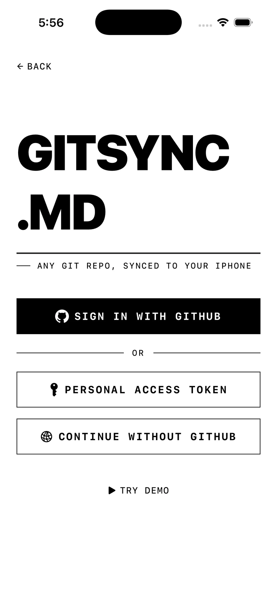
Clone into Obsidian’s folder

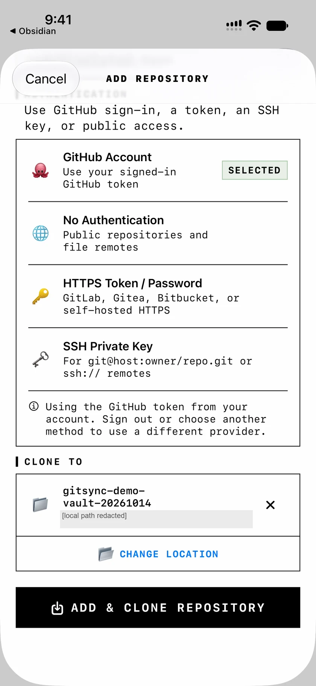
Open the cloned vault

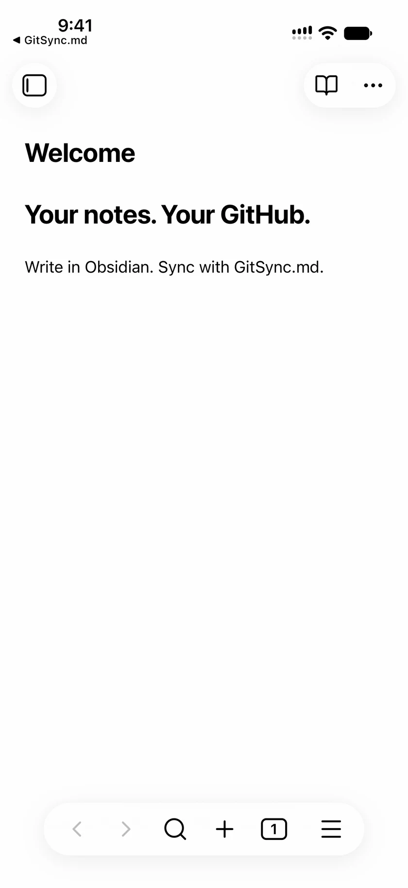
Allow community plugins

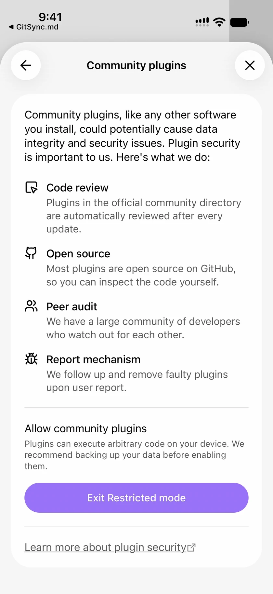
Install and enable Git

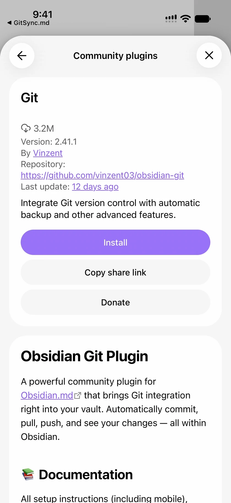
Install GitSync.md Connect

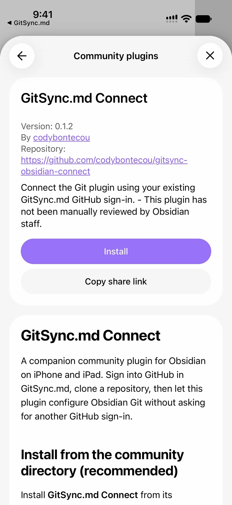
Enable the companion

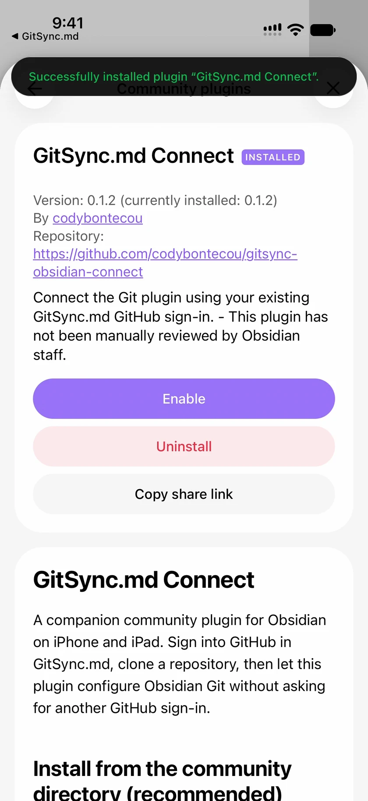
Let the apps connect

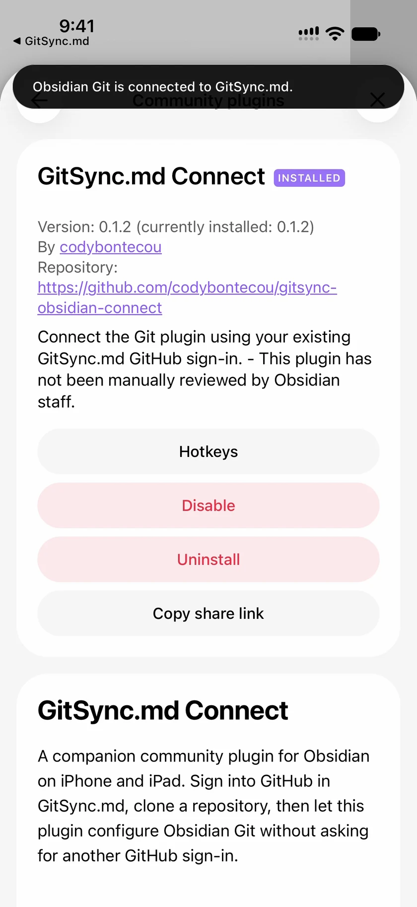
Pull through Obsidian Git

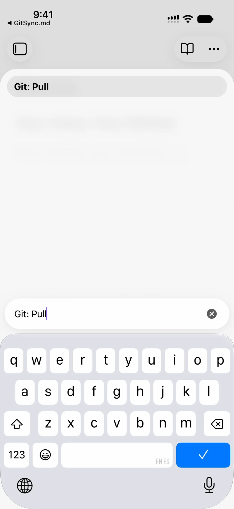
Check the incoming note

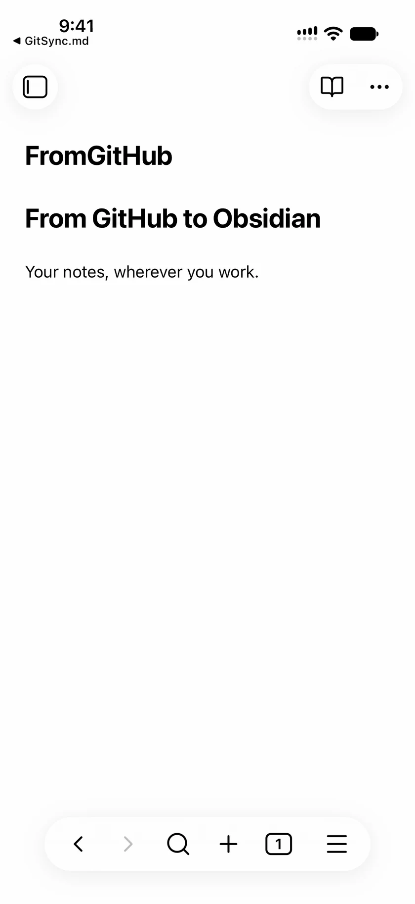
Write, then commit and sync

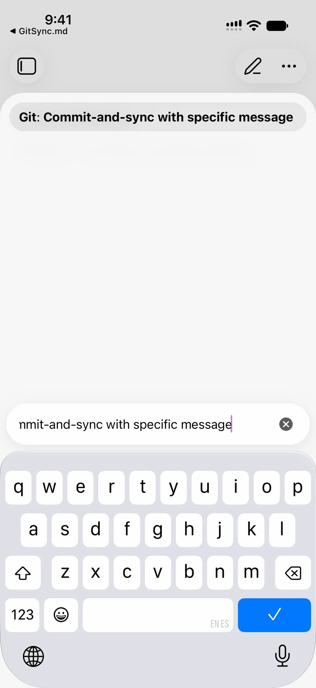
Confirm your changes arrived

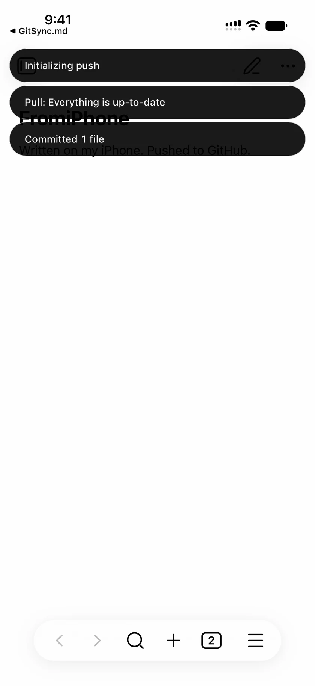
From GitHub to iPhone, and back
We tested the complete flow on a physical iPhone with a fresh private GitHub repository. The vault started without plugins or saved Obsidian Git credentials. Both plugins were installed from Obsidian’s community directory, and enabling Connect completed the handoff without another GitHub sign-in.
Then we added a new note on GitHub after cloning. Obsidian Git pulled it into the vault, where we opened and checked its contents. In the other direction, we wrote a new note on the iPhone, committed it through Obsidian Git, and pushed it. We independently checked GitHub to confirm the new commit and the exact note contents arrived.
The test used Obsidian 1.14.5, Git 2.41.1, and GitSync.md Connect 0.1.2. We repeated the happy path in a second fresh vault. The native app was a development build with the upcoming handoff support; this was a preview test, before the compatible App Store update’s release.
What happens to your sign-in?
GitSync.md keeps its original GitHub token in Keychain. During connection, the apps exchange a short-lived encrypted response inside the selected repository’s .git folder. The token never appears in the app-switch callback URL, and temporary handoff files are removed after a successful import.
Obsidian Git receives a copy of that token for repository operations. In the tested Git 2.41.1 release, it lives in device-local browser storage, not the operating system’s Keychain. It has the same permissions as the token in GitSync.md. Signing out of GitSync.md doesn’t clear Obsidian Git’s copy; you can clear it in Obsidian Git or revoke the token on GitHub.
The companion makes no direct HTTP requests. GitSync.md talks to GitHub for sign-in and cloning; Obsidian Git talks to GitHub for pulls and pushes. You can read the credential handling details and source code in the public repository.
A few useful details
Connection still failing? Follow the Obsidian Git troubleshooting guide. If you prefer to configure credentials directly, use the manual GitHub token tutorial.
Does this turn on automatic sync?
Connect configures authentication. You choose when to pull and push, or configure Obsidian Git’s own automatic sync settings. The companion is free and MIT licensed; GitSync.md is a separate app with its own pricing.
What if the connection doesn’t start?
Check that you have GitSync.md 2.8.0 or later and that both plugins are enabled in the cloned vault. Reopen the vault or run GitSync.md Connect: Connect this vault. If you need to replace credentials already saved in Obsidian Git, use Reconnect this vault (replace existing Git credentials).
What if my token expires or I change accounts?
Authenticate the appropriate account in GitSync.md, then run the reconnect command in Obsidian. This release doesn’t refresh imported tokens in the background, and you don’t need to clone your vault again to reconnect.
Will it work with SSH or another Git host?
This connection flow supports GitHub HTTPS clones using GitSync.md’s GitHub Account authentication. SSH, other hosts, unauthenticated public clones, and separate per-repository HTTPS tokens aren’t supported by the companion. The vault needs a regular .git directory at its root, with no custom Git directory, base path, or alternate push destination.